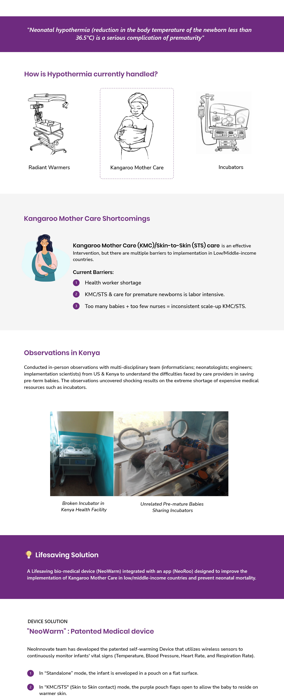
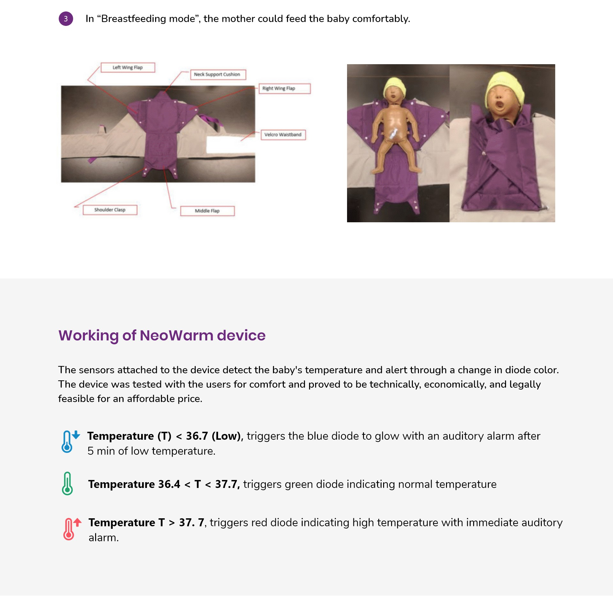
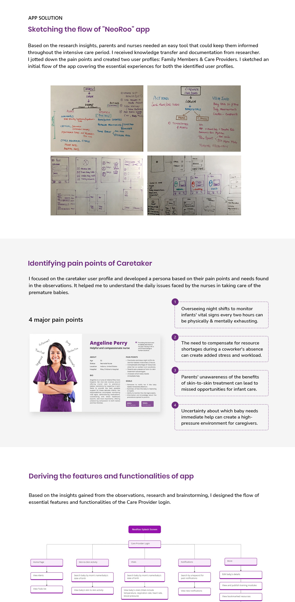
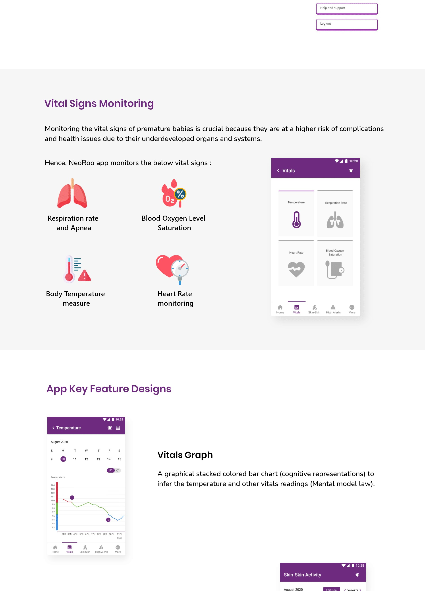
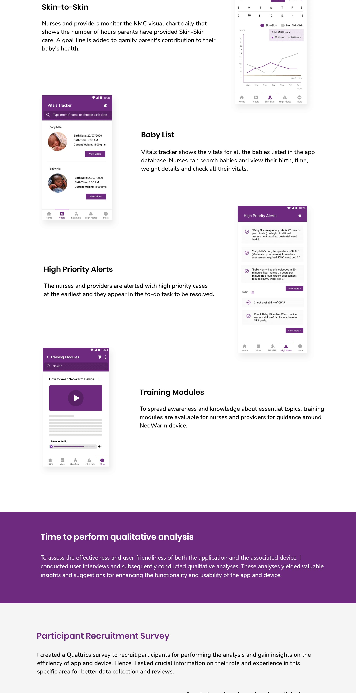
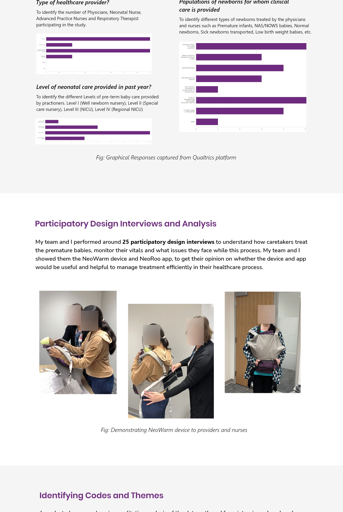
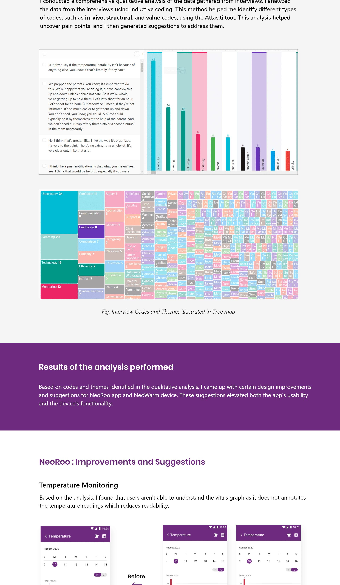
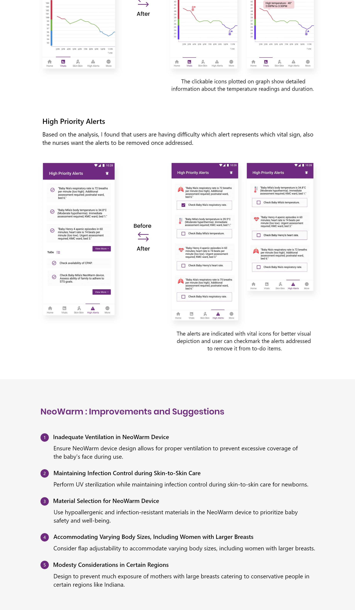

A UX research and design initiative at Indiana University: building NeoRoo, a mobile health platform connecting parents and clinicians around premature newborn care to reduce neonatal mortality through Kangaroo Mother Care.

Premature birth is a global crisis concentrated in low-resource settings. Neonatal hypothermia affects 17 million newborns annually, and nurse-to-baby ratios in Kenya reach 1:25: making continuous monitoring impossible without a digital solution.

NeoRoo connects to NeoWarm, a sensor-enabled wearable carrier that monitors four vital signs continuously via Bluetooth Low Energy. The device works in two modes: KMC/Skin-to-Skin mode (flaps open for skin contact) and standalone thermal protection mode.

Based on research and observations, I mapped the app flow on paper and whiteboard: covering both Family and Care Provider journeys. I then developed a caretaker persona grounded in the 4 major pain points surfaced from field research.
I developed a caretaker persona: Angeline Perry, a compassionate NICU nurse: grounded in direct observations and contextual inquiry. Four critical pain points emerged that became the foundation for every feature decision in NeoRoo.

Based on the pain points and insights from field observations, I designed the essential features and functionalities of NeoRoo for both the Family and Care Provider login flows. Each feature maps directly to a caretaker pain point.
I designed the full information architecture covering both the Family and Healthcare Provider flows. The bottom-tab navigation was chosen because it matched both users' mental models: care categories, not data streams.
NeoRoo monitors four vital signs critical for premature newborns: Respiration Rate (with apnea detection), Blood Oxygen Saturation, Body Temperature, and Heart Rate.

The four core feature screens beyond the vitals dashboard each solve a specific pain point uncovered in research:

I created a Qualtrics survey to recruit participants for the qualitative analysis: gathering information on their role and experience in the clinical settings where NeoRoo would be deployed.
I then performed 25+ participatory design interviews to understand how caretakers treat the premature babies, monitor their vitals, and what issues they face while this process. I showed them the NeoWarm device and NeoRoo app to get their opinion on whether the device and app would be useful and helpful to manage treatment efficiently in their experience.

Through contextual inquiry and participatory design sessions with 35+ healthcare professionals and real customers, these insights drove every design decision.
After conducting 25+ interviews, I analysed the data using inductive coding: identifying types of codes such as in-vivo, structural, and value codes using the Atlas.ti tool. This analysis helped me identify different types of pain points and then generated suggestions to address them.
Based on codes and themes from the qualitative analysis, I came up with design improvements and suggestions for NeoRoo app and NeoWarm device. These suggestions elevated both the app's usability and the device's functionality.

The qualitative analysis directly drove two key interface redesigns: the temperature trend view and the high priority alert system: both validated through follow-up participatory sessions.

The NeoRoo research was published in PLOS Digital Health (2023). The design work was validated through iterative participatory cycles with clinical staff, reducing manual coordination overhead and improving care process efficiency.
Let's talk about healthcare UX, research-driven design, or your next product challenge.